EdgeX to AWS IoT Core (Uplink)
Create a Thing
- Login to AWS Management Console
Search IoT Core in Find Services
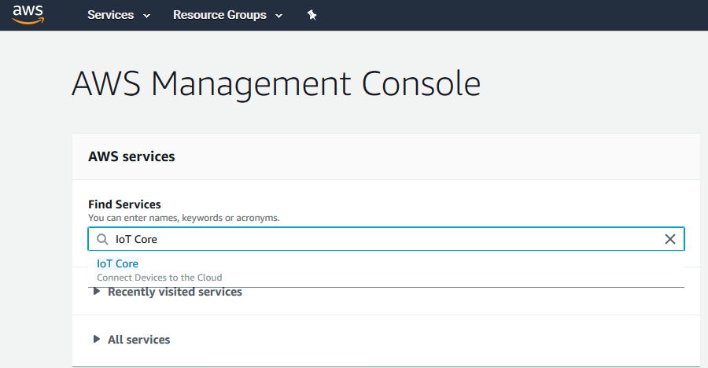
Select Manage > Things from the AWS IoT menu pane. Then Click Create button.
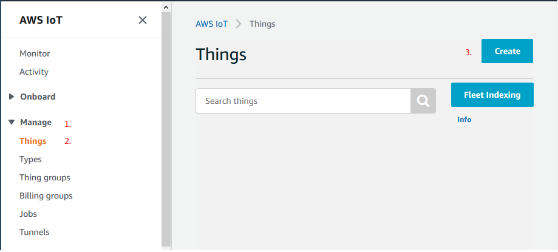
The wizard displays, then click Create a single thing and follow the wizard to create a single Thing as a target for export data from EdgeX. For more information on using the wizard, refer to the AWS Documentation.
4.1. Create a single thing
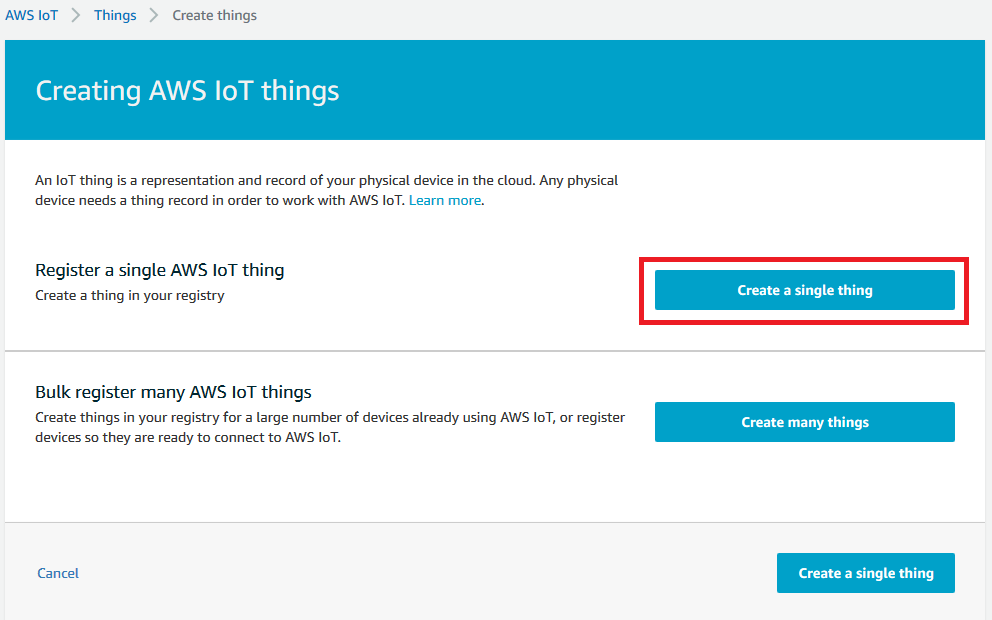
4.2. Name your IoT thing
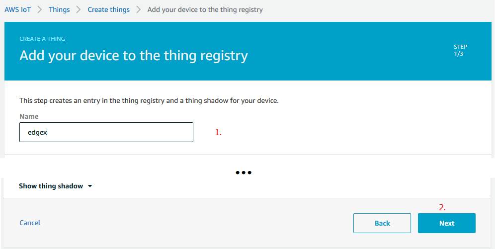
4.3. Create certificate
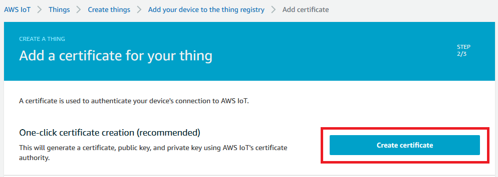
4.4. Download Certificate, Public key, and Private key. Then click Activate button to activate the certificate on AWS.
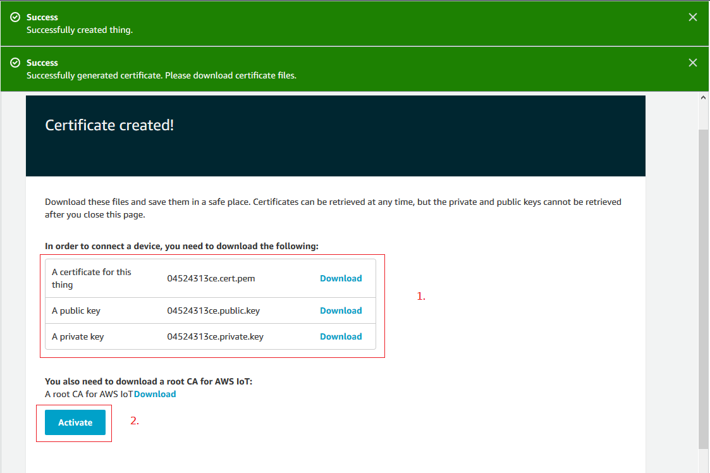
Note: You need to download the certificate and keys for setting the EdgeX MQTTSecretSend pipeline.
Click the Done button
Creating a Policy
- Select Secure > Policies from the AWS IoT menu pane
Click Create button
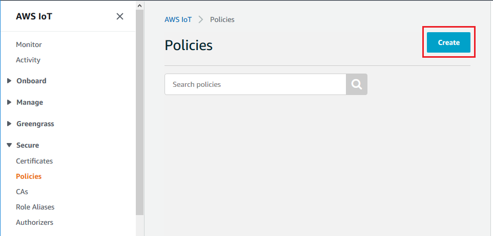
Enter a name for your policy.
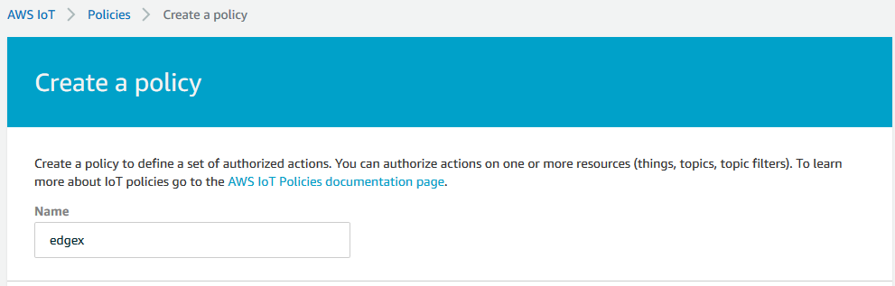
Set suitable permissions. If you are unsure of the permissions you require, add an asterisk () to the Action and Resource ARN text boxes, and select the *Allow checkbox, as illustrated below:
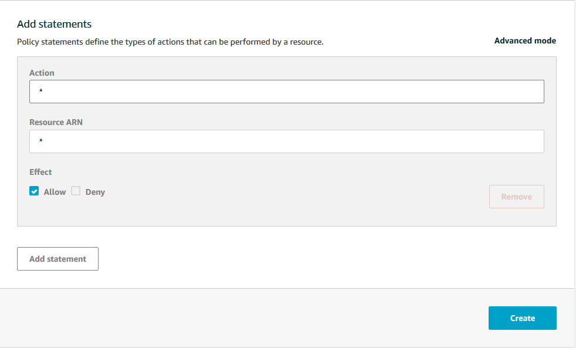
Click the Create button
Attaching the Policy to the Thing
Select Manage > Things from the AWS IoT menu pane
Select the Thing you created
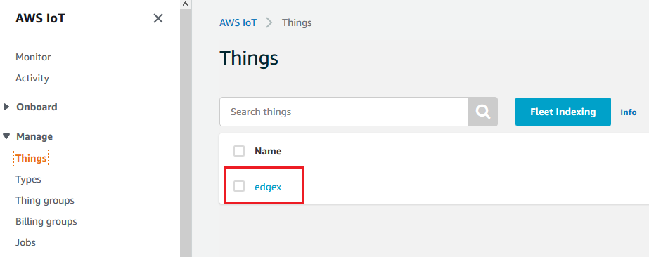
Select Security from the Things menu pane
Select the certificate you created
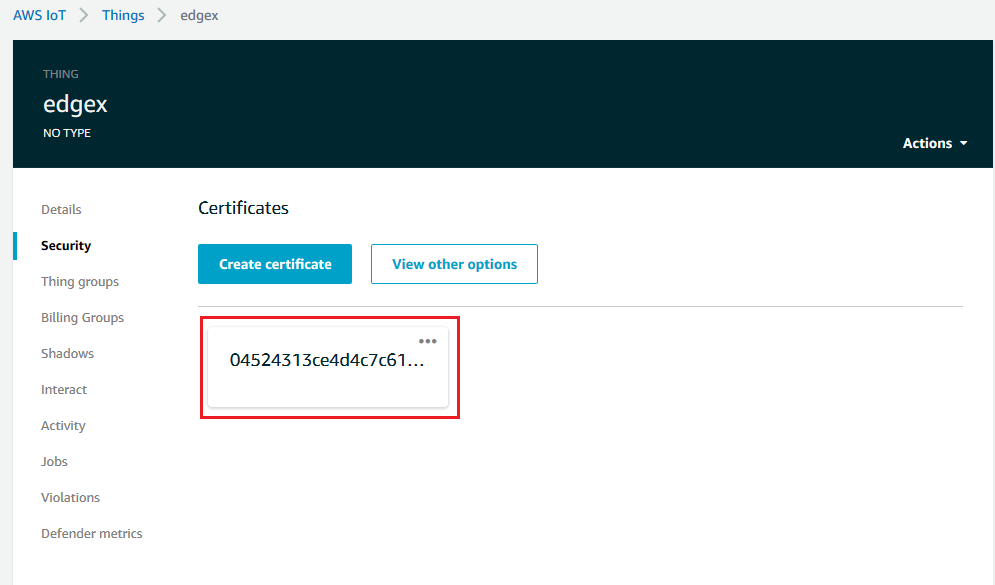
Select the Actions drop-down menu
Select Attach policy, as illustrated below:
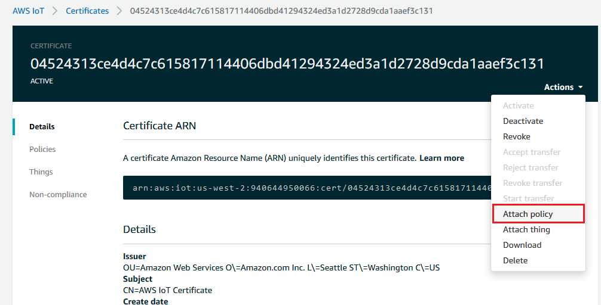
Select the policy you created
Click the Attach button
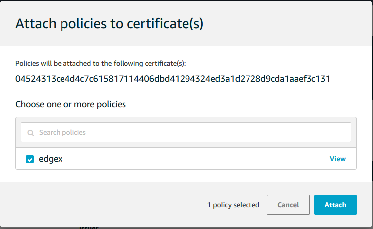
Noting the Endpoint
Select Interact from the Things menu pane
Note the Rest API Endpoint
We will use it as BrokerAddress in the MQTTSecretSend pipeline.
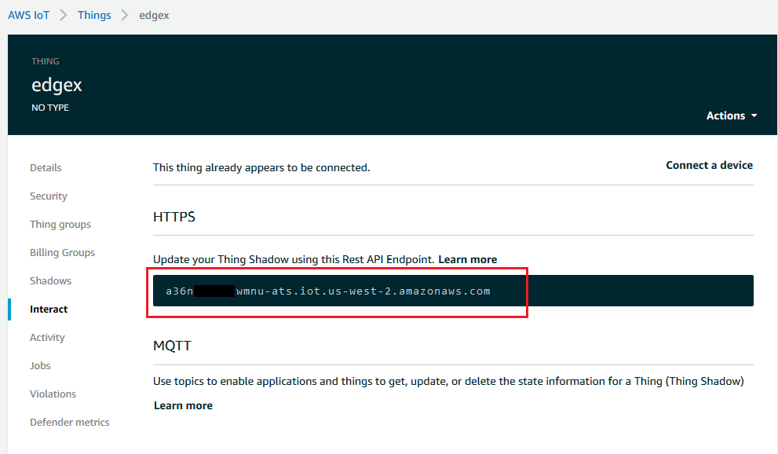
Set up EdgeX pipeline
Open EdgeX UI, navigate to EdgeX > Uplink, then Click ＋ to add a Transform.
Select
MQTTSecretSendin the EXPORT tab. (EdgeX 1.x)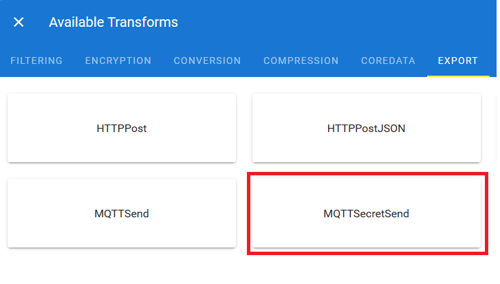
Or
MQTTExportfor EdgeX 2.x 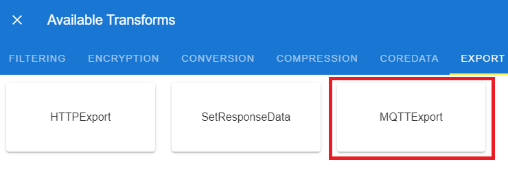
Enter all the parameters.
BrokerAddress
tls://<your AWS IoT Thing Rest API Endpoint>:8883- Topic:
<your topic> - ClientId:
<your clientId> - Qos:
0 - AuthMode:
clientcert Key PEM Block
<the content of the key you download from 'Create a Thing' step>The file name is in the following format:xxxxxxxxxx-private.pem.keyCert. PEM Block
<the content of the certificate you download from 'Create a Thing' step>The file name is in the following format:xxxxxxxxxx-certificate.pem.crtSecretPath:
mqtt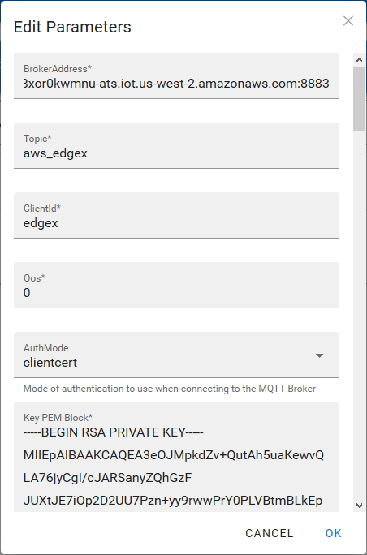
Click deoply button to apply the pipeline configuration.
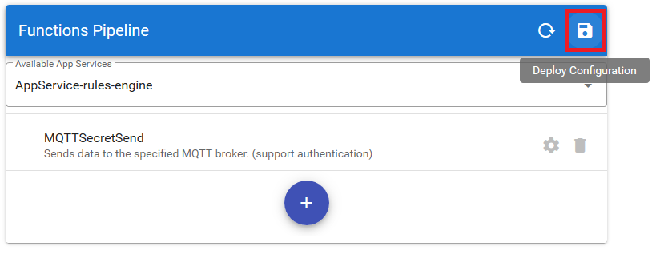
You can use the AWS MQTT client to subscribe the topic to monitor the data from the EdgeX.
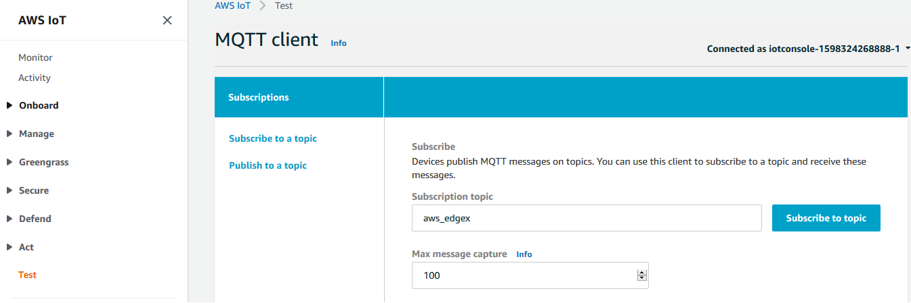